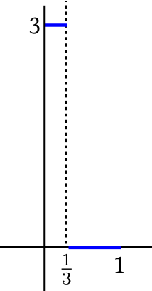
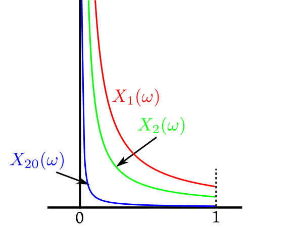
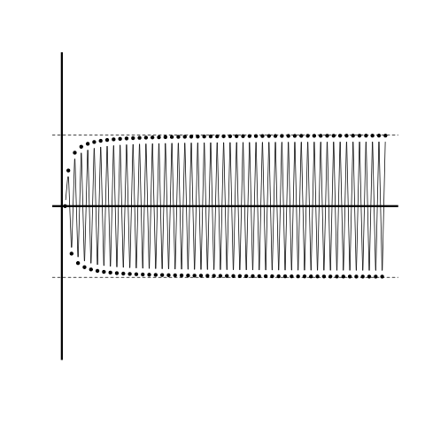
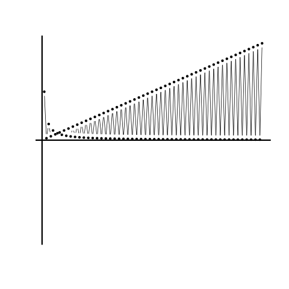
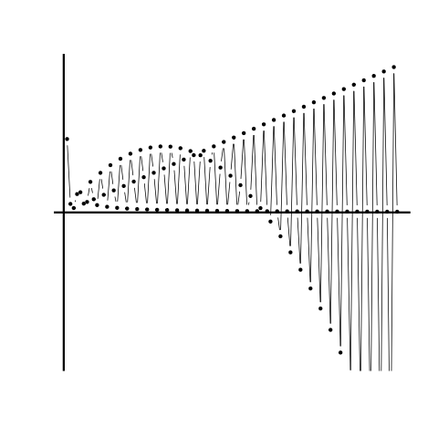

We would have been very happy, had there been a result saying: Whenever $X_n\rightarrowA X$ we have $E(X_n)\rightarrow E(X)$. Unfortunately,
this is not true in general. For one thing we need $E(X_n)$ and $E(X)$ to exist. But even if they do, $E(X_n)$
need not converge to $E(X).$
EXAMPLE 1: Construct an example where $X_n\rightarrowA X$ and $E(X_n), E(X)$ are all finite, but $E(X_n)\not\rightarrow E(X).$
SOLUTION:
Consider $Unif(0,1)$
probability space with $X_n(\omega)
=\left\{\begin{array}{ll}n&\text{if }\omega\in\left(0,\frac 1n\right)\\ 0&\text{otherwise.}\end{array}\right.$ and $X\equiv 0.$

Graph of $X_3$
Here $X_n(\omega)\rightarrow X(\omega)$ everywhere.
Let's find $E(X_n).$ Notice that $P(X_n=n) = \frac 1n$ and $P(X_n=0) = 1-\frac 1n.$ So $E(X_n) = n\times \frac 1n + 0\times \left(1-\frac 1n\right) = 1.$
Since $E(X) = 0,$ hence $E(X_n)\not\rightarrow E(X).$
■
So
we search for extra conditions under
which $E(X_n)\rightarrow E(X)$ will hold. The following two theorems each provide one such extra condition.
A sequence $(X_n)$ satisfying the condition
$\forall n~~|X_n|\leq Y$ for some $Y$
is called dominated by $Y.$ Hence the name dominated convergence theorem.
The 'M' in MCT refers to monotone, which may mean both increasing as well as decreasing (or non-decreasing or non-incresing).
However, in the theorem we require the sequence of functions to be non-increasing.
Does MCT hold for the non-increasing case? Unfortunately no, as the following counterexample shows.
EXAMPLE 3:
Here we shall again work with $Unif(0,1)$ probability space. Let $X_n(\omega) = \frac{1}{n \omega}$
and $X\equiv0.$

Then $\forall
\omega\in(0,1)~~X_n(\omega)\downarrow X(\omega).$
But $E(X_n)=\int_0^1 \frac{1}{n \omega} d \omega = \frac 1n\int_0^1 \frac{d \omega}{\omega} = \left. \frac 1n
\log \omega \right|_0^1 = \infty.$
But $E(X)=0.$
So $E(X_n)\not\rightarrow E(X).$
■
EXERCISE 1: (MCT)
Suppose that $X_n$'s are nonnegative random variables. Show that
$$E(\sum_1^\infty X_n) = \sum_1^\infty E(X_n).$$
EXERCISE 2: (DCT) Let $(X_n),X$ be random variables such that $X_n\rightarrowA X$ and $\forall n\in{\mathbb N}~~|X_n|\leq
Y$ for some random variable $Y$ with $E(Y) < \infty.$ Then show that $X_n\rightarrowL 1 X.$
EXERCISE 3: (DCT) Let $X$ be any random variable. Show that $f(t) = E(\sin(tX))$ is a continuous function.
Hint:
Enough to show that if $a_n\rightarrow a,$ then $f(a_n)\rightarrow f(a).$
EXERCISE 4: (DCT) Let $X$ be any random variable. Show that $f(t) = E(\sin(t+X))$ is a
differentiable function, with $f'(t) = E(\cos(t+X)).$
Hint:
Enough to show that if $a_n\rightarrow a,$ then $Y_n = \frac{f(a_n)-f(a)}{a_n-a}\rightarrow E(\cos(t+X)).$
Use the mean value theorem and boundedness of $\cos.$
EXERCISE 5: (MCT or DCT)
If $(X_n)$ is a nonincreasing sequence of nonnegative random variables converging to some random variable $X,$
and $E(X_1)<\infty,$ then show that $E(X_n)\downarrow E(X).$ What if the assumption $E(X_1)<\infty$ is
dropped?
We just now saw that if $X_n\rightarrowA X$ and $(X_n)$ is "nice" [?]
e.g., nonnegative,
nondecreasing (for MCT) OR dominated by some random variable with finite expectation (for DCT).
then
$E(X_n)\rightarrow E(X).$
But what if nothing is given about $(X_n)$ except that the random variables are all nonnegative? Not even that $X_n$'s
converge anywhere? The barebone statement that we can make even here is:
In all these cases we can talk about the limit of the sequence (even if the limit is not finite). But thre are sequences
for which limit does not make sense.

Here one part of the sequence is approaching one point, while the rest is going elsewhere. It is as if the sequence has
two limits. The precise mathematical term here is subsequential limit. Here we call
the largest subsequential limit the limsup and the smallest subsequential limit the
liminf of the sequence. The advantage of working with liminf and limsup is that
they exist for all real sequences. However, just like limits, they may be $\infty $ or $-\infty.$

Here limsup$=\infty$ and liminf$=0$.

Here limsup$=\infty$ and liminf$=-\infty.$
It should be obvious that for any real sequence we must have liminf $\leq$ limsup. Also they are equal if and only
if the sequence has a limit (and then limit, limsup, liminf are all equal, may be $\infty$ or $-\infty$).
EXERCISE 6: Consider $Unif(0,1)$ probability space. Let $X_n(\omega) = \omega^n$ for $n\in{\mathbb N}$. Compute both
sides of Fatou's lemma explicitly.
EXERCISE 7: Again consider $Unif(0,1)$ probability space. Let $X_n(\omega)=\left\{\begin{array}{ll}n&\text{if }\omega\in\left(0,\frac 1n\right)\\ 0&\text{otherwise.}\end{array}\right.$.
Compute both sides of Fatou's lemma explicitly.
EXERCISE 8: Consider $Expo(1)$ probability space. Let $X_n(\omega) = \left\{\begin{array}{ll}e^\omega&\text{if }\omega\in(n-1,n]\\ 0&\text{otherwise.}\end{array}\right.$
for $n\in{\mathbb N}.$ Compute both sides of Fatou's lemma explicitly.
EXERCISE 9: Suppose that $(X_n)$ is a sequence of random variables with $X_n\rightarrowA
X.$ If $\forall n\in{\mathbb N}~~ E(X_n)\in [2,5]$, then which of the following must be true?
$E(X)\geq 2$
$E(X)\leq 5.$
Prove and/or provide counterexample(s) accordingly.
EXERCISE 10: Give examples to show that equality or strict inequality may prevail in Fatou's lemma.
EXERCISE 13: Let $(X_n)$ be nonnegative random variables such that $\forall n\in{\mathbb N}~~E(X_n) <
\infty.$ If $X_n\rightarrow X,$ then must it be true that $E(X) < \infty?$